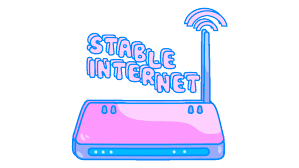

PORTOFOLIO
Proyek 1
pelajaran tentang pemrograman.
Apa Itu pemrograman?
pelajaran tentang pemrograman. pemrograman atau programming adalah proses menulis, menguji dan memperbaiki (debug), dan memelihara kode yang membangun suatu program komputer. Kode ini ditulis dalam berbagai bahasa pemrograman atau sering disebut juga bahasa komputer. Tujuan dari pemrograman adalah untuk memuat suatu program yang dapat melakukan suatu perhitungan atau pekerjaan sesuai dengan keinginan pemrogram. Untuk melakukan pemrograman, diperlukan keterampilan dalam algoritma, logika, bahasa pemrograman, dan pada banyak kasus, pengetahuan-pengetahuan lain seperti matematika.

Proyek 2
pelajaran tentang website.
Apa Itu Website?
Website adalah platform digital yang dapat diakses melalui internet, yang berfungsi sebagai tempat di mana individu, bisnis, atau organisasi dapat hadir secara online. Website memungkinkan bisnis untuk membagikan informasi, menawarkan berbagai produk atau layanan, dan terhubung secara global. Website sendiri merupakan kumpulan dari banyak halaman web. Halaman web adalah file yang membentuk bagian dari sebuahwebsite. Setiap halaman web ditulis dalam HTML (HyperText Markup Language) dan memiliki konten seperti teks, gambar, video, atau elemen multimedia lainnya. Ketika pengguna mengakses sebuah website, mereka sebenarnya sedang menjelajahi kumpulan halaman-halaman web yang terhubung melalui hyperlink.Untuk membuat website kamu dapat diakses oleh setiap orang di dunia, website tersebut harus disimpan atau dihosting pada komputer yang terhubung ke internet sepanjang waktu yang disebut dengan web server.
Proyek 3
pelajaran tentang internet
apa ituh internet
Interned adalah istilah yang digunakan untuk merujuk kepada masa di mana seseorang bekerja sementara di suatu perusahaan atau organisasi untuk mendapatkan pengalaman praktis dalam bidang tertentu. Biasanya, ini dilakukan oleh mahasiswa yang sedang belajar atau baru lulus dari perguruan tinggi untuk mendapatkan pemahaman yang lebih baik tentang industri atau profesi yang mereka minati. Selain itu, interned juga bisa dilakukan oleh seseorang yang ingin mengubah jalur karir atau mencari pengalaman tambahan dalam bidang tertentu. Biasanya, interned berlangsung dalam periode waktu yang terbatas, seperti beberapa bulan, dan sering kali tidak dibayar atau dibayar dengan kompensasi yang minimal. Tujuannya adalah untuk belajar, membangun jaringan profesional, dan mendapatkan wawasan tentang pekerjaan dalam lingkungan nyata.
KONTAK
Silahkan klik disini untuk terhubung dengan saya